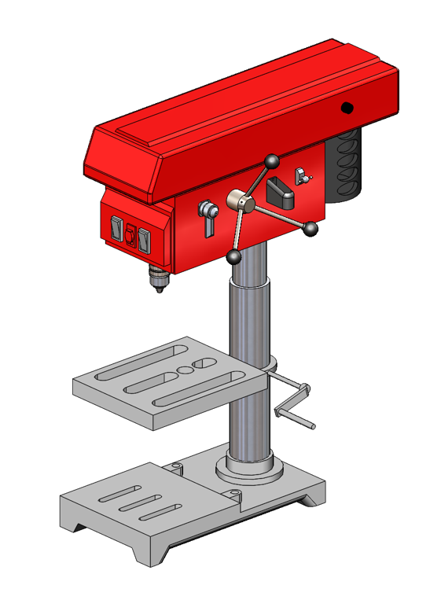
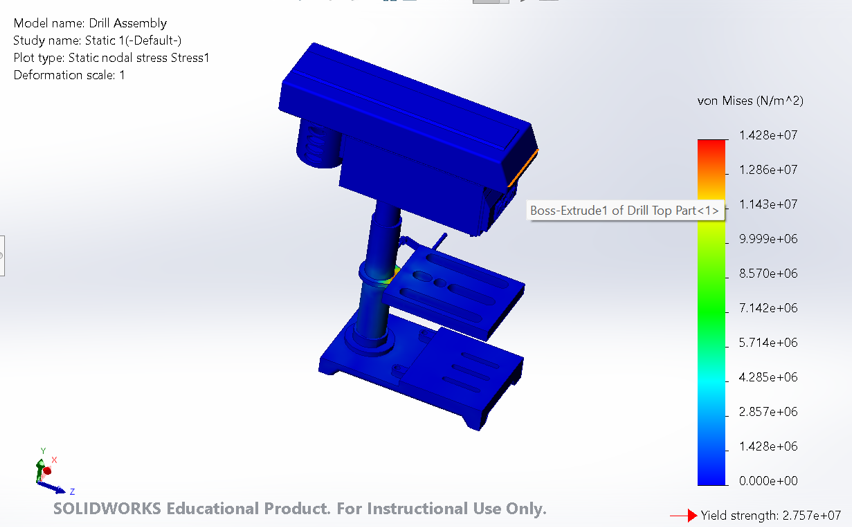
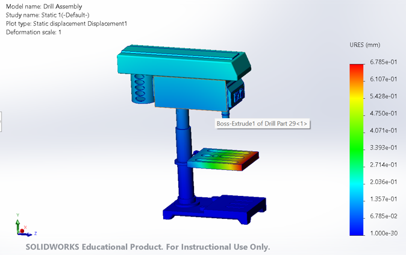
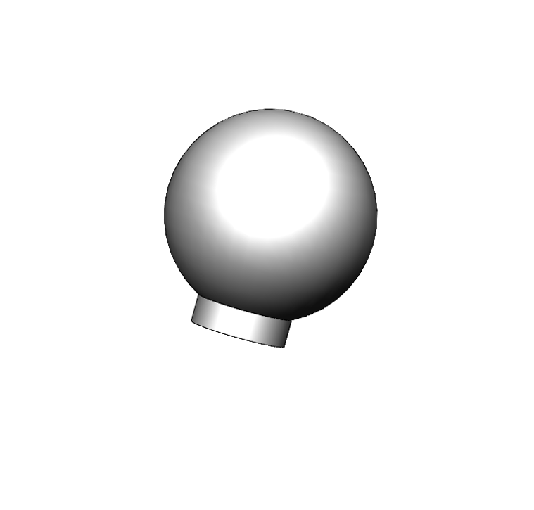
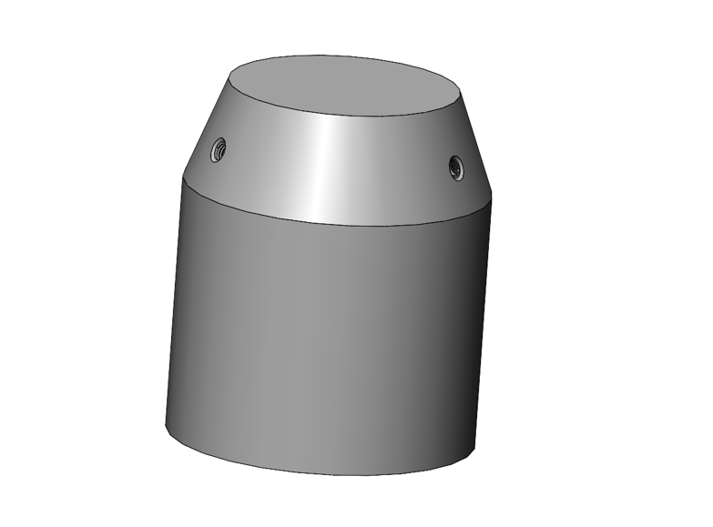
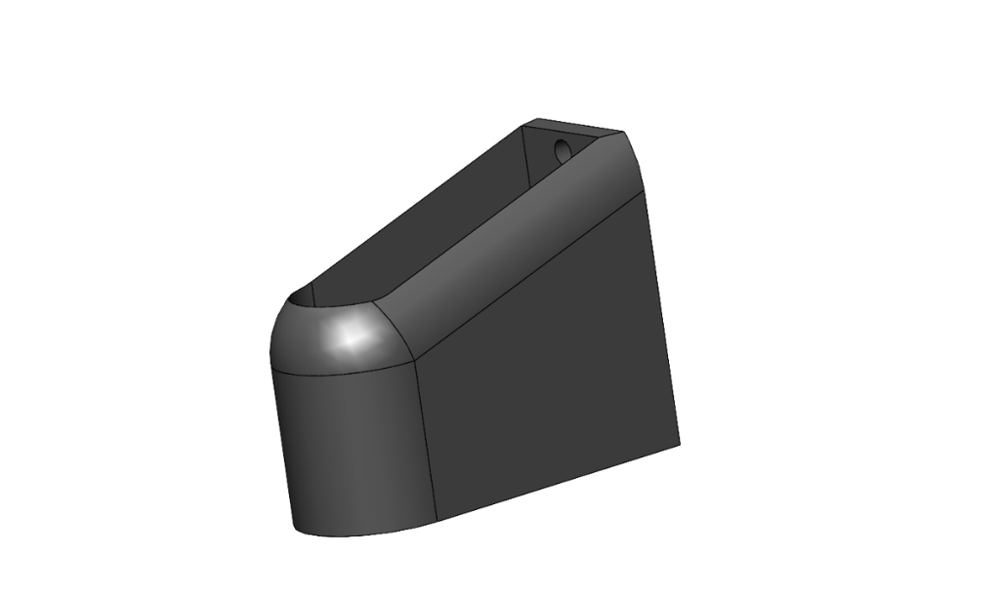

Project Overview
This project centered around the reverse-engineering and comprehensive CAD modeling of a fully functional industrial drill press. The objective was to create a production-ready digital twin that could be analyzed for structural weaknesses under extreme operating loads. By meticulously measuring and recreating each component in SolidWorks, we established a baseline for future optimization.
The assembly consisted of over 30 distinct components, including the base, column, spindle, motor housing, and varied fasteners. Ensuring correct geometric dimensioning and tolerancing (GD&T) was paramount to guarantee that the digital assembly functioned exactly like its physical counterpart without interference or binding.
Following the modeling phase, rigorous static Finite Element Analysis (FEA) was performed. We simulated a worst-case scenario featuring a 500 kg off-axis load to identify stress concentrations along the main column and the base plate junction. The resulting stress contour maps successfully validated the machine's safety factors.
Key Contributions
- Modeled and mated a complex 30-component precision assembly in SolidWorks, ensuring accurate geometric tolerances.
- Conducted static Finite Element Analysis (FEA) simulations to validate structural integrity under a simulated 500 kg maximum operating load.
- Generated a comprehensive technical drawing package, including exploded views and Bill of Materials (BOM), ready for manufacturing.
FEA Simulation & Structural Analysis
Finite Element Analysis (FEA) was performed on the full digital twin under a simulated 500 kg off-axis operational load. Stress contour and resultant displacement plots validated structural safety factors and verified that deflection limits remained within tight machining tolerances.

Static Nodal Stress Distribution
Evaluates stress concentrations across the head casting, support column, and table clamp under static loading. Peak stress remained well below material yield criteria.
- Study Type: Static Nodal Stress
- Material Yield Strength: 27.57 MPa (2.757e+07 N/m²)
- Max Critical Stress: 14.28 MPa (1.428e+07 N/m²)
- Safety Factor Status: Validated (Pass)

Static Resultant Displacement
Quantifies structural deflection along the cantilevered table plate and column axis under maximum operating feed force to ensure tool alignment repeatability.
- Max Resultant Deflection: 0.6785 mm (Table Edge)
- Column Deflection: < 0.135 mm
- Deformation Scale: 1.0 (True Scale)
- Deflection Compliance: Within Rigidity Limits
Parametric Component Modeling
Each individual casting, turned shaft, fastener, and housing component was reverse-engineered with parametric CAD features, strict geometric dimensioning, and manufacturing clearances.

Feed Lever Handle Knob
Ergonomic spherical terminal knob modeled with a cylindrical threaded boss for mating with the 3-spoke manual quill feed hub assembly.
- Geometry: Revolved Spherical Body
- Mounting: Threaded Boss Interface
- Application: Manual Feed Spoke Lever

Spindle Chuck Collar
Precision turned arbor collar featuring dual radial set-screw tapped holes and a chamfered taper for secure concentric tool clamping.
- Geometry: Turned Cylindrical Taper
- Features: Dual Radial Set-Screw Holes
- Application: Spindle Arbor Alignment

Motor Mount Bracket
Rigid cast housing bracket with counterbored mounting holes and filleted transitions designed for motor alignment and drive belt tensioning.
- Geometry: Extruded Profile with Fillets
- Features: Counterbored Fastener Bore
- Application: Drive Motor Housing Mount